AI Academy · Level 2 · Grade 7 · Week 34 · Student lesson
Test Diverse Users
Learn to understand, design, build, test and explain AI systems responsibly.
Project: Transparent Book Recommender
Before you start
Week 24: rates need the relevant denominators.
Plan time to read, investigate and explain. Keep predictions separate from observations.
Student lesson · 1 of 17
Your mission
Your learning target
I can evaluate across varied cases.
I can report failures with their denominators.
I can separate development evidence from final checks.
Remember before reading
Close your notes first. A rough first answer helps us choose the right starting point; it is not a score for your ability.
Without opening the old lesson, explain one key idea from Build the Recommender. Give an example and a mistake that the idea helps you avoid.
Without opening the old lesson, explain one key idea from Permissions and Human Review. Give an example and a mistake that the idea helps you avoid.
Without opening the old lesson, explain one key idea from Prompt Experiments. Give an example and a mistake that the idea helps you avoid.
After trying, check the relevant lesson or ask your teacher. Change the part of your explanation that the evidence shows was wrong.
Week 34: Test Diverse Users
Evaluation must include ordinary, edge, and underserved cases.
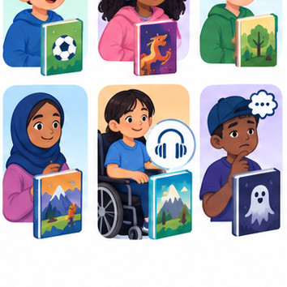
THINKER MISSION
Run four user profiles; log errors and fairness concerns.
Thinker name and date:
Readiness for the connected explanation
If final cases guide a code change, are they still untouched evaluation cases?
This week’s end goal
By the end, I can evaluate varied case types and prioritise an important failure slice.
Student lesson · 2 of 17
Notice the evidence
PICTURE STORY
Notice → Predict → Explain
Begin with visible evidence. Do not explain more than the picture and information support.
MYSTERY
The learners must use test diverse users to solve a problem. What information do they have? What decision or calculation do they make? What would count as evidence that it worked?
Three observations (what you can point to):
My prediction and the clue supporting it:
A closer explanation
A fictional chooser passes 5 of 6 development checks but fails its only tie case. An overall pass rate can hide that concentrated weakness. Evaluate ordinary, boundary, invalid, empty and tie cases separately, using requirements rather than duplicated versions of one easy example.
Student lesson · 3 of 17
See how it works
VISUAL MECHANISM
Input → Process → Output
Trace the information. At each stage, ask what changed and how you could test it.
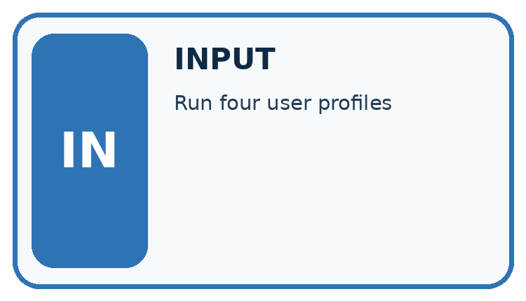
↓
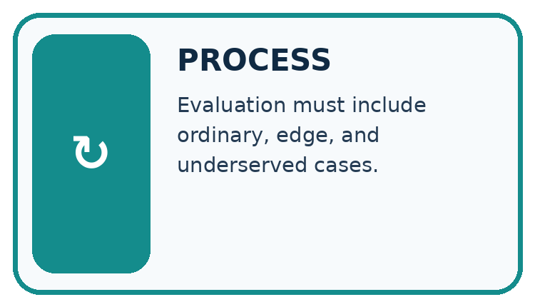
↓
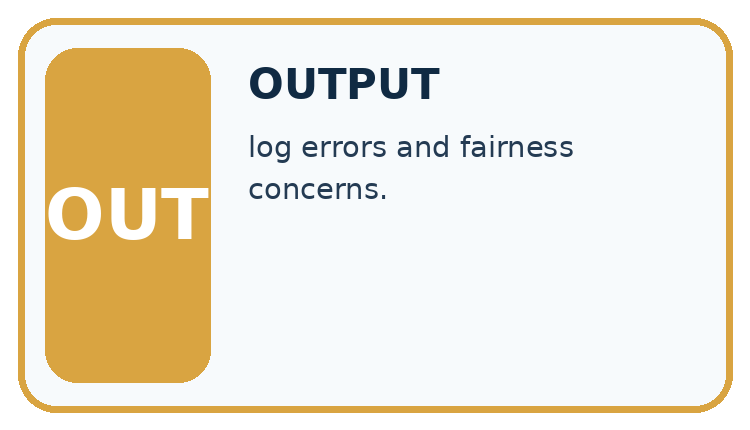
Which stage could fail even when the other two are correct? Explain:
A closer explanation
checks = [{"category": "ordinary", "passed": True},
{"category": "ordinary", "passed": True},
{"category": "boundary", "passed": True},
{"category": "invalid", "passed": True},
{"category": "empty", "passed": True},
{"category": "tie", "passed": False}]
passed = 0
for check in checks:
if check["passed"]:
passed = passed + 1
print(passed, len(checks))Follow the evidence
The script reports 5 and 6. About 83.3 percent of these checks pass, but that is not an accuracy estimate for all future use. The cases were deliberately chosen, their frequencies are artificial, and each category has few cases.
Look inside the overall result
The six development checks include ordinary, boundary, invalid, empty and tie cases. Five pass, but the only tie case fails. Saying five out of six pass is true; saying the tie rule works is false. Keep both statements visible. A category table helps you choose the next repair. Adding many copies of passing ordinary cases can raise the overall fraction without checking a new condition or fixing the failed requirement.
Connect the picture and the explanation
Point to the input, the deciding step and the result in this week’s visual. Explain the same step in ordinary words. A picture helps when you can say what each part represents.
Student lesson · 4 of 17
Compare the cases
CASE GALLERY
Four Tests, Four Kinds of Evidence
A system is not understood until it survives more than one comfortable example.


NORMAL CASE: predict and name evidence. BOUNDARY CASE: predict and name evidence.


MISSING INFORMATION: predict and name evidence. TRANSFER CASE: predict and name evidence.
Which case is most likely to reveal a hidden assumption? Why?
Change one thing in the pictured case
Change: Someone reports only the ordinary slice.
Prediction: The claim becomes 4/4 on ordinary cases, not 100% across all tests.
Reason: Eight nonordinary cases and their failures have been omitted.
Student lesson · 5 of 17
Words that unlock the idea
VOCABULARY LAB
Words You Can Use to Reason
A definition matters when you can recognize the idea, use it, and contrast it with a near-miss.
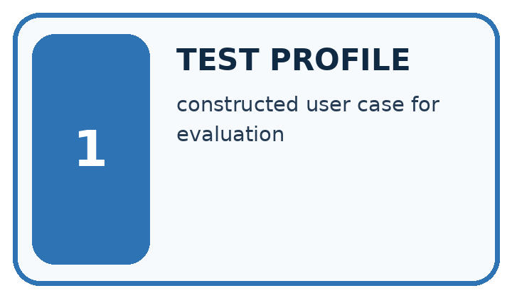
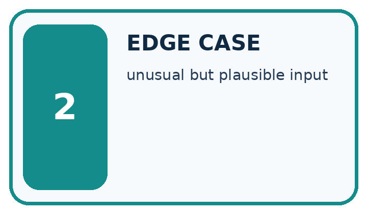
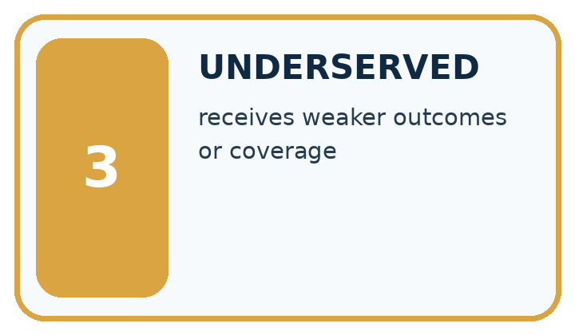
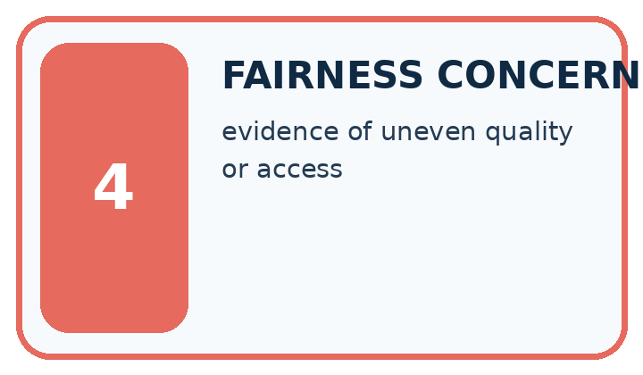
| Word | My own example | Not this / boundary |
|---|---|---|
| test profile | A description of the kinds of cases and conditions included in an evaluation. | |
| edge case | An unusual, boundary or difficult input that can reveal a failure hidden by routine examples. | |
| underserved | Receiving less adequate support or performance than the intended service requires. | |
| fairness concern | A reason to examine whether a system creates unjustified differences in treatment or outcomes. |
Words used in the closer explanation
| Word | Meaning |
|---|---|
| Evaluation set | Cases used to assess a specified version |
| Failure category | A type of scenario where an expected result is missed |
| Pass rate | Passing cases divided by executed cases |
| Coverage | The variety of requirements and conditions tested |
Student lesson · 6 of 17
Follow a worked example
WORKED EVIDENCE
Reason Step by Step
Predict first. Then check each step. A correct answer without visible reasoning is incomplete evidence.
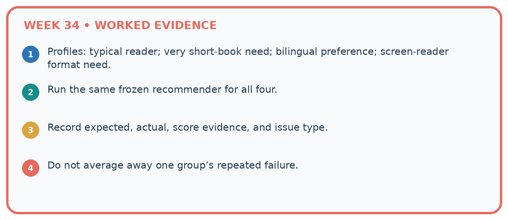
1. Profiles: typical reader; very short-book need; bilingual preference; screen-reader format need.
2. Run the same frozen recommender for all four.
3. Record expected, actual, score evidence, and issue type.
4. Do not average away one group’s repeated failure.
Recalculate, retrace, or restate the reasoning in your own representation:
CHECK Did the evidence answer the exact question? Did the total, path, or source record stay consistent?
A closer explanation
Learn from the worked case
Cover the result before checking it. Say what is given, choose the procedure, and follow one step at a time. Then uncover the result and explain your first mismatch. Ask why a step is allowed, not only what number it produces.
A pictorial worked case: Test Diverse Users
A fictional recommender is tested on distinct ordinary, equality, invalid-input and tie cases.
The facts we will use
Recorded full passes: ordinary 4/4; equality 1/3; invalid 2/3; ties 1/2.
Categories are disjoint and every case was run on the same frozen version with the same contract.


Read the picture one step at a time
Why this result follows
Varied tests expose behavior an ordinary demonstration misses. The overall result combines disjoint cases once each; overlapping labels would require unique-case accounting. Prioritisation also depends on consequences: a malformed input that triggers an unauthorised action can be more serious than a harmless tie-order failure. Retain each failed case and its expected output.
What this example does not establish
Twelve designed cases describe this test suite, not an unbiased estimate of future usage accuracy.
Read the labelled picture: Can these records establish performance for different user groups?
Change one thing: Someone reports only the ordinary slice. Predict the result before checking the explanation. What remains the same?
Student lesson · 7 of 17
Find and repair a mistake
ERROR DETECTIVE
Compare → Diagnose → Repair
Do not patch the answer. Find the earliest unsupported assumption, wrong step, or weak evidence.
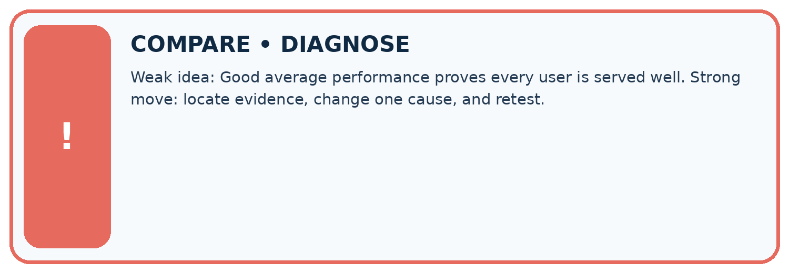
| Evidence record | Expected | Actual | Likely cause / next test |
|---|---|---|---|
| normal case | works | ||
| boundary case | stated rule | ||
| missing input | safe response | ||
| fresh transfer | generalizes |
Repair one cause. Why is this repair better than changing several things?
A closer explanation
For a rule-based chooser, evaluate conformance to its policy separately from whether users find suggestions useful. Neither a pass fraction nor an invented satisfaction score proves educational benefit.
Student lesson · 8 of 17
Practise together
LOGIC STUDIO
Trace Before You Run
Block code, pseudocode, tables, and diagrams are different ways to expose the same reasoning.

SET evidence_record PREDICT expected_result RUN one normal case and one boundary case COMPARE actual_result with expected_result IF different: locate first cause; change one factor; RETEST EXPLAIN result, limitation, and next safe step
Trace one input. Which line changes the state or chooses a path?
A closer explanation
Hiding the tie failure in an average conceals an unmet requirement. Preserve the failed input, expected result, actual result and version. If you repair using it, classify it as development/regression evidence and reserve new final cases.
Practise with less help: Plan coverage
Use workbook W2 for the connected example “Evaluating varied cases”. First fill the input and rule boxes. Try the middle steps before asking for a hint. After a hint, try the next step yourself.
| Plan | Do | Check |
|---|---|---|
| What is given? Which rule or procedure applies? | Record each intermediate step. | Does the result follow? What remains unknown? |
Explain your trace to a partner. Your partner points to one step to check. Swap roles on the next case. Each person writes their own explanation.
Check your reasoning
Use the worked case for Evaluating varied cases. Proposed explanation: “A successful run proves the conclusion”. Decide whether this explanation is supported. Point to the step or supplied fact that decides; explain your repair if needed.
Answer on your own before discussion. If you are unsure, say which step you need help with.
Explain the picture
Can these records establish performance for different user groups?
This is supported practice. Keep the separately named independent case for an attempt before feedback.
Student lesson · 9 of 17
Run the investigation
EVIDENCE LAB
Predict → Test → Record → Explain
Keep expected and actual results separate. Surprises are useful data when recorded honestly.
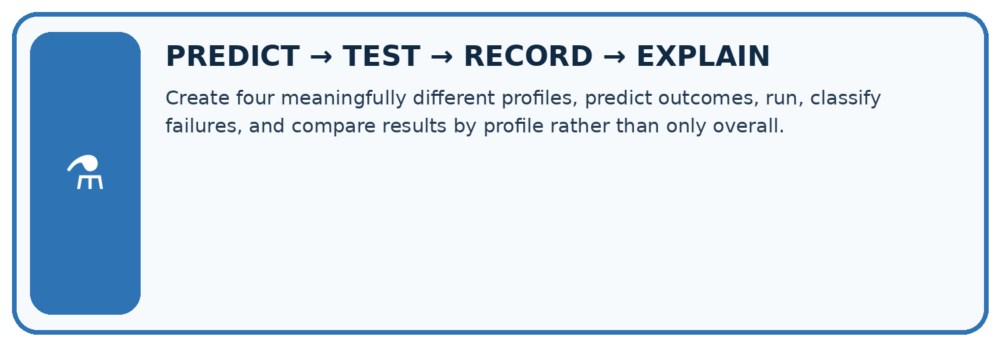
Create four meaningfully different profiles, predict outcomes, run, classify failures, and compare results by profile rather than only overall.
| Test / input | Prediction | Actual | Evidence / calculation | Change or keep? |
|---|---|---|---|---|
| normal | ||||
| boundary | ||||
| missing | ||||
| fresh transfer |
What did the hardest test teach you that the normal test did not?
Plan → try → check
Before trying: what do I expect, and why? While trying: which step could first go wrong? Afterwards: what did I actually observe, and what should change? Keep “not run” if you only traced the procedure.
Student lesson · 10 of 17
Build your understanding
MASTERY
From Knowing the Word to Owning the Idea
Move upward only when you can produce evidence without copying the worked example.

1 • NAME: Define the concept without repeating the textbook.
2 • TRACE: Show the information, state, branch, calculation, or evidence path.
3 • APPLY: Solve a different example independently.
4 • CHALLENGE: Find a boundary case, counterexample, or unfair outcome.
5 • EXPLAIN LIMITS: Say when the result should not be trusted or used alone.
My strongest evidence of independent understanding:
Student lesson · 11 of 17
Connect your project
CUMULATIVE PROJECT
Transparent Book Recommender
Every week adds one inspectable piece. The system must show how it reached a result.
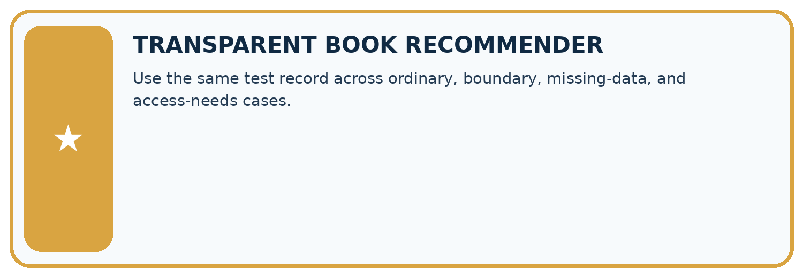
THIS WEEK’S CHECKPOINT Use the same test record across ordinary, boundary, missing-data, and access-needs cases.
SYSTEM MAP Reader need → allowed inputs → transparent rule or score → ranked candidates → explanation → test record → human decision
What will you add, change, or verify in the project this week?
What should remain under human control?
RESPONSIBLE DESIGN Collect only necessary information. Show uncertainty and limits. Never confuse a ranking with a fact about a person.
Evidence for your project
Build a recommender evaluation matrix with routine, boundary, missing, invalid and tie cases, then add separately planned user-condition coverage.
Student lesson · 12 of 17
Show what you know
INDEPENDENT MASTERY PROOF
Explain • Transfer • Test • Defend
Complete this page without copying the worked example. Your reasoning matters more than decoration.
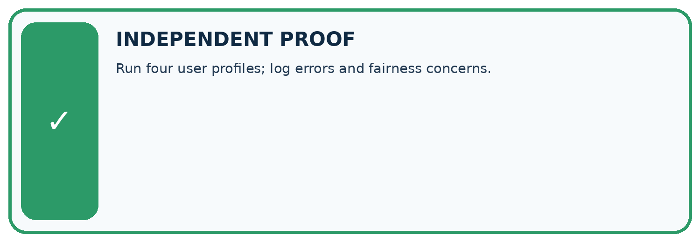
CHALLENGE Run four user profiles; log errors and fairness concerns.
1. My fresh example, trace, calculation, or design:
2. My evidence that it works (include a boundary or missing-data case):
3. One limitation, fairness concern, or situation needing human review:
SELF-CHECK □ I explained the mechanism □ I used evidence □ I tested a fresh case □ I named a limitation □ I can answer ‘why?’
Student lesson · 13 of 17
Study a complete case
Week 34 Worked case
Use the supplied details to practise the weekly concept before attempting the independent question. This case extends the illustrated lesson.
The situation
A recommender satisfies 5/6 adventure requests and 3/6 poetry requests.
The question
Compare and investigate.
Worked explanation
Rates are 5/6 and 3/6. Inspect catalogue coverage, labels and scoring; twelve tests do not establish cause.
Explain it in your own words
Which detail supports the answer, and why does it matter?
Trace the supplied case visually
Compare success for different interests
| Evidence or stage | Value or result |
|---|---|
| Adventure requests | 5/6 |
| Poetry requests | 3/6 |
A recommender satisfies 5/6 adventure requests and 3/6 poetry requests.
Compare and investigate.
Rates are 5/6 and 3/6. Inspect catalogue coverage, labels and scoring; twelve tests do not establish cause.
Student lesson · 14 of 17
Try a new case independently
Independent case: Evaluate independently
Given ordinary 3/3, boundary 1/2, invalid 2/2 and tie 0/1, compute overall results and prioritize issues.
Attempt this case before feedback. Record any help. Earlier examples below are further practice; a case already practised with feedback cannot establish fresh transfer.
Week 34 Independent application
Close the worked explanation. Apply the idea to this different question without copying.
A recommender serves 6 of 6 easy-book requests but 1 of 4 advanced-book requests. Report both results and identify the next test priority.
My answer, with a trace, calculation or supporting evidence
Create and test
Change one relevant detail. Predict the result before testing. Include a boundary or missing-information case when it helps reveal a limit.
My changed input and expected result
Connect to your project
Use the same test record across ordinary, boundary, missing-data, and access-needs cases.
The evidence I will keep
Your teacher has the independent answer and scoring criteria. Complete the matching workbook week to keep your practice evidence together.
Transfer practice from the original programme
The recommender succeeds on 9/10 mystery requests and 2/5 poetry requests. Compute total and separate rates. A team reports only 11/15. Explain what that hides.
Use feedback to improve
Attempt the independent case before hints. Record whether you worked alone, used a hint or followed a model. After feedback, fix the first unsupported step and explain why it changed. A later check uses a changed case, not a copied answer.
Student lesson · 15 of 17
Your lesson route
Start with this question: A fictional recommender is tested on distinct ordinary, equality, invalid-input and tie cases.
| By the end, I can | How I will show it |
|---|---|
| Evaluate across varied cases | Explain the deciding step, show a trace or test, and state one limit. |
| Report failures with their denominators | Explain the deciding step, show a trace or test, and state one limit. |
| Separate development evidence from final checks | Explain the deciding step, show a trace or test, and state one limit. |
Remember → watch and explain → try with help → investigate → try independently → keep project evidence. Your teacher may spread this lesson across several classes.
Keep your first prediction. Compare it with what the evidence shows and explain any change.
Student lesson · 16 of 17
Finish and return
Close your notes. Explain this goal in your own words: Evaluate across varied cases
If you are unsure, return to the worked picture and explain one arrow. If you are ready, change an input or assumption and justify your prediction.
Save your workbook evidence. At the next review, try a different case before opening your old answer.
Student lesson · 17 of 17
Supported practice, repair and portfolio
Use this supported practice once, in the browser or on paper. Keep the reserved independent assessment for a separate first attempt before teacher feedback.
A fictional recommender is tested on distinct ordinary, equality, invalid-input and tie cases.
Practice 1: explain the deciding evidence
Which labelled step matches this detail? Inspect failed equality traces and any invalid-input safety consequence, not only the total.
1. Prioritise repair
2. Total count
3. Find weak slices
4. Overall rate
Hint if needed: Read the steps in the pictorial case. Match the supplied detail to the stage that performs or records it.
After your attempt, compare with the supported explanation: Prioritise repair Inspect failed equality traces and any invalid-input safety consequence, not only the total. Varied tests expose behavior an ordinary demonstration misses. The overall result combines disjoint cases once each; overlapping labels would require unique-case accounting. Prioritisation also depends on consequences: a malformed input that triggers an unauthorised action can be more serious than a harmless tie-order failure. Retain each failed case and its expected output.
Practice 2: explain the deciding evidence
Changed-case practice: Someone reports only the ordinary slice. Which conclusion is supported by the supplied facts?
1. This one example guarantees correct results for every future input.
2. The claim becomes 4/4 on ordinary cases, not 100% across all tests.
3. We can decide the result without examining the changed input or the procedure.
Hint if needed: Use the changed condition and the deciding step in the pictorial trace. The answer must say what follows from those facts.
After your attempt, compare with the supported explanation: The claim becomes 4/4 on ordinary cases, not 100% across all tests. Eight nonordinary cases and their failures have been omitted.
Repair a missing building block
Review Build the Recommender (ai-2/33). Goal: Implement a deterministic recommender. Short practice: Explain why B does not win after D is excluded even though it has fewer pages.. Return to this week and explain what you changed.
Review Permissions and Human Review (ai-2/31). Goal: Explain the mechanism and terminology of least privilege and tool scopes. Short practice: Which proposal is allowed, and why is an authorised object alone insufficient?. Return to this week and explain what you changed.
Review Prompt Experiments (ai-2/28). Goal: Explain the mechanism and terminology of controlled prompt experiments. Short practice: Name the case P passes and Q fails, and explain why it matters.. Return to this week and explain what you changed.
Predict, run and debug
The browser lab lets you edit the supported Python examples already included in this lesson. Predict first, run, inspect the actual output or error, change one input, then run again. Keep code, predictions, actual results and a reasoned revision together. On paper, label your result as a trace rather than an execution.
Keep your completed work
Use Download completed work in the hosted lesson to export your answers, reflections, practice feedback and code-run evidence. Open the HTML copy to read or print it. Drafts stay in this browser when storage is available; clear drafts on a shared device.